Our mark is the P of Play. A ball comes back to close it, like the serve and return of talk and play: a grown-up says something, and a child answers.
The small gap before the ball is the pause that gives the child a turn.
